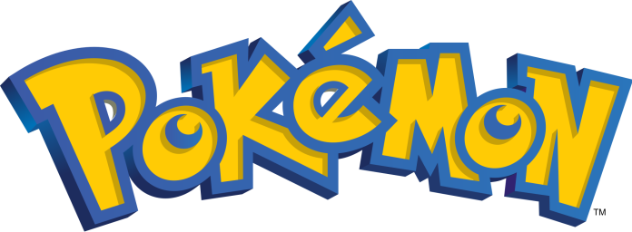
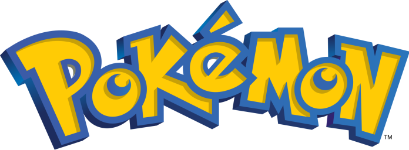

-
Bulbasaur @001

- Grama
- Veneno
Há uma semente de planta nas suas costas desde o dia que este Pokemon nasce. A semente cresce lentamente.
-
Ivysour @002

- Grama
- Veneno
Quando o bulbo em suas costas cresce, parece perder a capacidade de ficar em pé em suas patas traseiras.
-
Venusour @003

- Grama
- Veneno
Sua planta floresce quando está absorvendo energia solar. Ele permanece em movimento para buscar luz solar.
-
Charmander @004

- Fogo
Tem preferência por coisas quentes. Quando chove, diz-se que o vapor jorra da ponda de sua cauda.
-
charmeleon @005

- Fogo
chama que arde na ponta da cauda é uma indicação das suas emoções. A chama vacila quando Charmander está desfrutando de si mesmo. Se o Pokémon fica furioso, a chama queima ferozmente..
-
charizard @006

- Fogo
Charizard voa em torno do céu em busca de adversários poderosos. Ele respira fogo de tão grande calor que derrete qualquer coisa. No entanto, nunca vira a sua respiração ardente em qualquer adversário mais fraco do que o próprio.
-
Squirtle @007

- Água
O casco de Squirtle não é apenas usado para a proteção. A forma arredondada do casco e as ranhuras em sua superfície ajudam a minimizar a resistência na água, permitindo que este Pokémon nade em altas velocidades.
-
Wartortle @008

- Água
É reconhecido como um símbolo de longevidade. Se sua concha tem algas, esse Wartortle é muito antigo.
-
Blastoise @009

- Água
Ele esmaga seu inimigo sob seu corpo pesado para causar desmaios. Em uma pitada, ele se retirará dentro de sua concha.
-
Caterpie @010

- Inseto
Para proteção, ele libera um fedor horrível da antena em sua cabeça para afastar os inimigos.
-
Metapod @011

- Inseto
O escudo que cobre o corpo deste Pokémon é tão duro como uma laje de ferro. Metapod não se move muito. Ele ainda permanece assim porque está preparando suas entranhas macias para a evolução dentro da casca dura.
-
Butterfree @012

- Inseto
Butterfree tem uma capacidade superior para procurar um delicioso mel de flores. Ele pode até mesmo buscar, extrair, transportar e mel de flores que estão florescendo mais de seis milhas do seu ninho.
-
Weedle @013

- Inseto
Weedle tem um sentido extremamente agudo de cheiro. Ele é capaz de distinguir os seus tipos favoritos de folhas daqueles que não gosta apenas por cheirar com a sua grande tromba vermelha (nariz).
-
Kakuna @014

- Inseto
Kakuna permanece praticamente imóvel quando ele se agarra a uma árvore. No entanto, no interior, é extremamente ocupado, que se prepara para a sua evolução que vem. Isto é evidente o quão quente a casca torna-se ao toque.
-
Beedrill @015

- Inseto
Beedrill é extremamente territorial. Ninguém deve se aproximar de seu ninho - isto é para sua própria segurança. Se ele se irritou, eles vão atacar em um enxame furioso.
 
